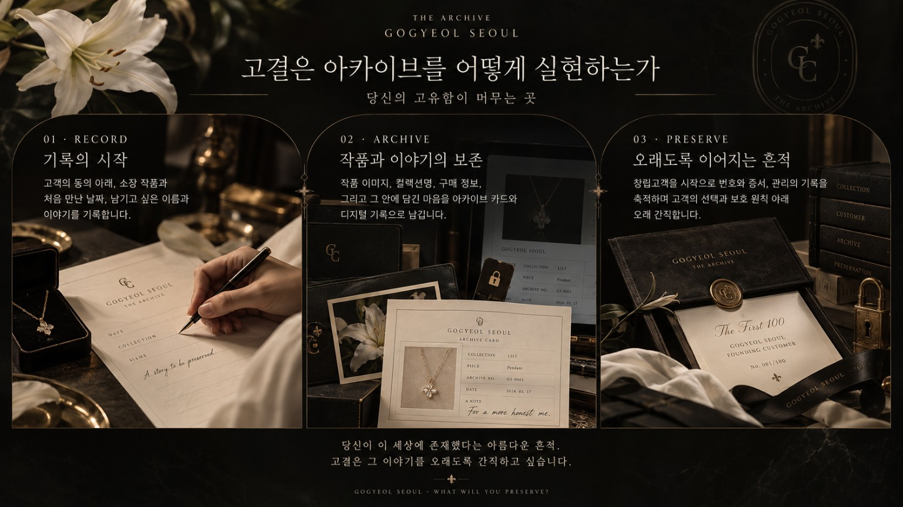

모든 사람에게는 자신만의 이야기가 있습니다.
살아온 시간, 소중한 기억, 지키고 싶은 마음.
고결은 그 이야기들이 오래도록 기억되기를 바랍니다.
아카이브는 소중한 기록을 모으고 보존해 미래에 전하는 공간입니다. 고결에게 아카이브는 한 사람의 삶과 그 안에 담긴 의미를 기억하는 약속입니다.
고객이 원하고 동의하는 경우, 소장 작품과 처음 만난 날짜, 남기고 싶은 이름과 작품에 담긴 이야기를 기록하고자 합니다. 사랑하는 사람에게 받은 선물, 스스로에게 건네는 축하, 잊지 않고 싶은 특별한 순간까지.
고결은 창립고객을 시작으로 개별 아카이브 기록을 구축하려 합니다. 기록의 열람과 관리, 보관 범위와 기간, 향후 전달 방식은 고객의 선택과 개인정보 보호를 바탕으로 단계적으로 마련하겠습니다.
당신이 이 세상에 존재했다는 아름다운 흔적.
고결은 그 이야기를 오래도록 간직하고 싶습니다.
